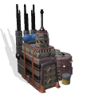

Factory
Factories provide advanced equipment for efficient
production in colonies. Colonists who are assigned to production
workforce can use factories to increase their output.
Points generated by the production workforce are used to build
improvements and units in a colony.
